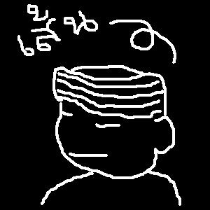
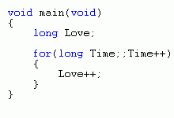

พิจารณามนุษย์สูงต่ำ
คุณธรรมในจิตไม่สถิตที่
มองตนเห็นเพียงความดี
บรรจงตีราคาจิตใจ
ไม่เคารพต่อมนุษย์ต่างจิต
แบ่งพวกคบคิดเลือกข้างฝักใฝ่
หักไมตรีบีบบังคับผลักไส
ไร้ดวงใจเมตตาเพื่อนพันธุ์
มนุษยชาติหลากคิดพิเคราะห์
เหมาะเจาะสมคบหุนหัน
เร่งเร้าเฆ่นฆ่าโรมรัน
ผลาญพันธุ์ราดเลือดละเลงรอย
กี่ครั้งคาวคลุ้งประวัติศาสตร์
แค้นอาฆาตอารยถดถอย
หยิบยกอุดมคติเล็กน้อย
เพิ่มอีกรอยบทเรียนเลือดแด่อนุชน ,,..
ตา
หู
จมูก
ปาก
ไปพบ
ไปฟัง
ไปชิด
ไปพูด
ได้พบ
ได้ยิน
ได้ชม
ได้พูด
ชื่นตา
ชื่นหู
ชื่นกลิ่น
ชื่นใจ
แววตาอันสดใส
น้ำเสียงอันไพเราะ
เนื้อหอมชวนดอมดม
เกินห้ามใจมิให้เผยคำ "รัก"
ฉันเป็นคนบ้า
คนบ้าคือฉัน
คนทุกคนเห็นฉันบ้า
ฉันเห็นทุกคนบ้า
คนบ้าอยู่รอบตัวฉัน
ฉันอยู่ท่ามกลางคนบ้า
ทุกคนคิดว่า ฉันบ้า
ฉันเชื่อมั่นว่า ฉันบ้า
และ ฉันเชื่อว่า ทุกคนบ้า
คนดีดีที่ไหนจะมาตั้งใจอ่านข้อความบ้าบ้าพวกนี้...
ทุกสรรพสิ่งสุดเศร้ามาเคล้าคลุก
เดินตะกุกก๊อกแก๊กไม่แปลกหนอ
ไม่ราบเรียบเปรียบดังเดินย้ำกอ
หากเพียงรอรับชะตาน่าชิงชัง
ฝันและใฝ่ไกลลับนับหมื่นอย่าง
มองเห็นทางถ่อเข้าใกล้ที่ใจหวัง
แต่ช้าไปไม่ดังใฝ่ใจทรุดพัง
ก็กลับหลังลงสมุทรมุดลงตาย
เจอปัญหาเข้ามาท้าไม่กล้าสู้
มั่วแต่คู้ขดข้องอมือหงาย
แม้มีชีพไม่คิดเดินก็ดังวาย
สูญสลายละลายค่าที่ว่า"คน"
แต่ข้าตายหายจากโลกไม่โศกเศร้า
เพราะค่ำเช้าใช้ชีวิตผลิตผล
ให้ฝันไกลใกล้มาช้าก็ทน
ไม่อาจยลยังภูมิใจได้มุ่งทำ...
สถานะ : เขียนแล้วสบายใจจัง
20.25 น วันจันทร์ที่ 30 มิถุนายน พ.ศ.2551
ณ หน้าคอมพิวเตอร์สามัญประจำบ้าน

เส้น
ที่หนาและยาวเท่ากัน
แต่หากไม่ใช่เส้นเดียวกัน
ก็ไม่มีวันจะวางซ้อนกันได้อย่างสนิทแน่น
คน
มีเลือดเนื้อและลมหายใจเช่นเดียวกัน
แต่หากไม่ใช่คนเดียวกัน
ก็ยอมไม่มีวันจะเข้าใจอย่างลึกซึ้ง
เส้นแต่ละเส้นและคนแต่ละคน
มีเอกลักษณ์ ความเป็นตน
ผู้อื่นมักไม่เข้าใจเรา
ความเป็นเรามักไม่เหมือนใคร
จนรู้สึกต้องทนต่อชีวิตเรื่อยมา
แต่ก็ไม่ใช่เรื่องแปลก
เพราะไม่ใช่เราที่แตกต่างจากคนอื่น
แต่ทุกคนล้วนต่างจากกันและกัน
เพียงแค่เราเห็นความเป็นเรา
ดังเส้นสีขาวบนพื้นสีดำหรือไม่
...

รักแท้ ไม่ต้องการนำเข้าสิ่งใดเพื่อช่วยเสริมแต่งความรัก
หลักแห่งรักแท้ รับความว่างเปล่าและคืนแต่ความว่างเปล่ากลับไปสู่ผู้เรียกหา
มีเพียงประกาศ "ความรัก" ไว้ภายใน
และหมุนเวลานับไป อย่างไม่สิ้นสุด
โดยไม่ว่า ค่าของความรัก จะเริ่มต้นเท่าใด
ความรักก็จะเพิ่มพูลขึ้นทุกเวลา...
สถานะ : ทำใจสบายๆปล่อยให้ชีวิตผ่านไปอย่างมีจุดหมาย
พฤหัส 24 เมายน พ.ศ.2551 เวลา 16.54 น.
ณ ประเทศเล็กๆบนดาวเคราะห์ที่กำลังโดนทำร้าย
ปล. หวังว่าคงไม่มีอะไรมาทำให้ความรัก crash ซะก่อนนะ
ทุกเส้นสี ตะหวัด ปรากฎเป็นเส้นพาดเอียงขึ้นสู่มุมด้านซ้าย
เส้นแล้วเส้นเล่า เส้นแล้วเส้นเล่า เส้นแล้วเส้นเล่า ณ ตำแหน่งเดียว
ทับซ้อนลงบนผืนผ้าสีขาว จนกลายเป็นแถบสีที่ชัดเจน
และหยุด ปล่อยให้สี ซึมซาบ
แผ่ขยายออกจนกลืนกินเกือบทุกพื้นที่ของผืนผ้านั้น
หากวาดภาพบนวิญญาณได้ดังผืนผ้านี้
ทุกสิ่งที่สัมผัส จะผ่าน เข้าสู่พื้นที่เล็กๆภายใต้อกซ้าย
ทุกวันทุกคืน ทุกวันทุกคืน ทุกวันทุกคืน ณ หัวใจที่เป็นหนึ่งเดียว
ทับซ้อนลงบนชีวิตธรรมดา จนกลายเป็นความความผูกพันที่ชัดเจน
และหยุดโลกนี้ไว้ ปล่อยให้ความรัก ซึมซาบ
แผ่ขยายในเกือบทุกส่วนของวิญญาณ
และ เหลือที่ว่างเล็กๆไว้เป็นโอกาสเติมเต็มซึ่งกันและกัน...
สมองน้อยด้อยค่าราคาโง่
ไม่อาจโอ้อวดอ้างสร้างสิ่งสา
ไม่อาจเอื้อมเชื่อมโลกพัฒนา
ไม่มีฟ้าในฝันใสให้รอคอย
สมองดีก็มีที่อวดเบ่ง
คนเส็งเคร็งความรู้มากมัวแต่ฝอย
เร่งแต่ยกยอตนจนหลุดลอย
เปร่งแต่ถ้อยทุเรศด่าว่าคนดิน
สมองน้อยคอยดูอยู่ภาคพื้น
เช้าเร่งตื่นแต่ฟ้ามืดไม่สุดสิ้น
เร่งหุงหาและพาตัวออกหากิน
ใช้หมดสิ้นเสี้ยวนาทีที่ทุ่งงาน
สมองดีมีที่นั่งยังไม่นึก
มัวทักถึกทำท่าว่าอาจหาญ
ตั้งตัวเป็นเทวดาบัญชาการ
แต่เอางานหนักไม่เท่าเหล่าชาวดิน
ถ้าเหล่าท่านเทวดาวางท่าโก้
ต้องเติบโตตรงตำแหน่งนอกฐานถิ่น
กินก็ขาดพ่อก็หายแม่ตายสิ้น
อย่างชาวดินด้อยค่าเคยว่ามา
แล้วสับกันกับเด็กดินสิ้นโอกาส
ให้สามารถมีหนทางเที่ยวศึกษา
มีครอบครัวคุ้มครองปองปรีดา
จนฟากฟ้าส่องสดใสได้ดิบดี
หากท่านพบเหตุการณ์นี้กับชีวิต
เป็นได้ไหมจะคิดมีสุขศรี
เป็นได้ไหมจะรุ่งโรจน์โชติทวี
เป็นได้ไหมจะได้มีความรุ่งเรือง
ถ้าท่านตอบตามคำพูดสูตรคำเก่า
ว่า"ถ้าเราเก่งแน่แท้ปราดเปรือง
แล้วจะพ้นโพยภัยไม่ฝืดเคือง"
ขอให้เรื่องเร่งประสบพบท่านเอง...
สถานะ : นั่งวัดค่าของคน
วันอาทิตย์ที่ 23 มีนาคม 2551 เวลา 20:30 น.
ณ ดินแดนระหว่างโลกมนุษย์กับโลกมนุษย์อีกใบ
ในละครชีวิตเรื่องนี้
ตัวตลกอย่างฉัน มันไม่มีดีพอที่จะรักนางเอกเลยหรือ
ผู้ชมต่างคอยเชียร์ให้นางเอกสมรักกับพระเอก
ผู้ชมนั่งขำภาพตัวตลกในเวลาที่มันร้องไห้อกหัก
ผู้ชมต่างชอบใจเวลาพระเอกได้ล่วงเกินนางเอก
ผู้ชมนั่งขำภาพตัวตลกที่ทำหน้าเศร้าเวลามองเห็นภาพนั้น
ทำไมตัวตลกถึงต้องมีบทเป็นเพียงคนที่สนิทเท่านั้น
ทำไมตัวตลกจะได้เพียงความไว้วางใจไม่ใช่ความรัก
ทำไมคำว่า"รัก" จากพระเอกที่ทิ้งแฟนเก่า เพราะเจอหญิงใหม่จึงซึ้งใจนัก
ทำไมคำว่า"รัก" ที่เป็นรักเดียวของตัวตลกอย่างฉัน จึงไร้ค่า
สำหรับนางเอก ตัวตลกตัวนี้ก็มีสิทธิเพียงคนที่เธอ "วางใจ" ไม่ใช่ "มอบใจ"...
สมชาย : นี่ สมคิด เธอเห็นยัยบ้าที่อยู่ตรงมุมถนนโน่นมั้ย
สมคิด : ตรงไหน ชั้นไม่เห็นมีคนบ้าที่ไหนเลย
สมชาย : นั่นไง ยัยคนที่นั่งพูดคนเดียว หัวฟูๆ ยิ้มน้อยยิ้มใหญ่อยู่นั่นน่ะ หล่อนตาบอดหรือยังไงยะ
สมคิด : นั่นน่ะหรอ คนบ้าของเธอ ฉันว่าเราสองคนนี่แหละบ้าของแท้
สมชาย : ชั้นบ้าตรงไหนไม่ทราบยะ
สมคิด : เธอก็ลองมองดูรอบๆตัวเธอซิ มีกี่คนที่ยิ้มอย่างมีความสุขได้อย่างคนที่เธอเรียกเค้าว่า คนบ้า
แล้วมีกี่คนที่จะมีความสุขได้อย่างเค้าในสังคมที่เธอเรียกว่า สังคมของคนปกติ
แต่เรากลับอยู่กันได้ ทั้งที่ไม่มีความสุข
ก็คิดดูแล้วกันนะว่า คนอย่างเรา กับคนที่เธอว่า เค้าบ้า ใครบ้ากว่ากัน
ความสำเร็จอยู่ห่างจากนั่งวิ่งระยะสั้น เพียงไม่กี่เมตร
ความสำเร็จอยู่ห่างจากนักกระโดดสูงเพียงไม่กี่ฟุต
ความสำเร็จอยู่ห่างจากนักมวยเพียงช่วงแขน
ความสำเร็จอยู่ห่างจากนักหมากรุกเพียงช่วงฝ่ามือ
แต่ ความสำเร็จ คือ สิ่งที่ได้มาอย่างยากเย็น
สถานะ : จบ! "แค่อยากเขียนเพราะสมองมันต้องการ"
22.25 น. 7 มี.ค. 2551
ณ ลานกว้างระหว่างโลกความฝันของคนบ้าและโลกมนุษย์ที่ฉุดคนดีให้เป็นคนบ้า
เปลือกตาปิดลง
โลกหยุดลงไปแล้ว
หัวใจเต้นอ่อนลง
สมองใกล้หยุดความคิด
จินตนาการเร่งสร้างโลกอีกใบ
เพื่อรอการหยุดของความคิด
เมื่อสมองหยุด
โลกอีกใบขับเคลื่อนไปอย่างช้า
ทุกอย่าง ว่างเปล่า
มองไม่เห็นแม้เส้นขอบฟ้า
มีเพียงภาพเธอ สีหน้า น้ำเสียง ที่ชัดเจน
อยู่เคียงข้างฉัน
ฉันได้แต่นิ่งเงียบ
ในโลกที่มีเอกภพ เพียงฉัน และเธอ
เพื่อได้เห็นเธอใกล้ๆ
เพื่อได้ยินเสียงเธอใกล้ๆ
เพื่อจะได้รับรู้ความรู้สึกเธอใกล้ๆ
เก็บทุกความรู้สึก
ทุกวินาที ที่ผ่านไป
จนเปลือกตาเปิด
โลกฝัน สิ้นสลาย พบกับวันใหม่
ในโลกระทม
น่ารำคาญใจจิตที่คิดนึก
มัวรำลึกเรื่องราวถึงคราวไหน
ให้มันเศร้าเมาอารมณ์จนตรมใจ
หรือจะให้ตายจากพรากวิญญา
นั่งคร่ำครวญหวนนึกในความหลัง
ที่เคยพลั้งผิดผลาดปรารถนา
ยิ่งคิดนึกถึงครั้งใดใจโศกา
เจ็บปวดใจกินกว่าจะทานทน
ทุกสรรพเสียงสดับรับยิ่งกลับเศร้า
เสียงตัวเรายังฟังคล้ายฟ้าผ่าฝน
หรือเสียงแจ่วเจรจาประชาชน
กลับเพี้ยนฟังดังคนด่าว่าตัวกัน
หากยังเป็นเช่นนี้ไม่มีหยุด
คงต้องสุดสิ้นชีพสิ้นชื่อฉัน
เพราะมัวคิดใคร่ครวญเรื่องเก่าวัน
จนหมดฝันหมดไฟในใจตน
เราเป็นคนดินรนและต่อสู้
ใครจะรู้รุ้งสวยหลังสิ้นฝน
เฝ้าแต่ครวญจนลืมค่าความเป็นคน
ต้องอดทนและมีหวังว่า สักวัน !!!
ไม่รู้ใจทำไมจึงอยากเขียน
มานั่งเพียรพร่ำเพ้อละเมอฝัน
มานั่งเขียนนั่งขีดทำไมกัน
ทั้งที่วันวุ่นวายเต็มเวลา
แต่ก็เขียนเขียนอยู่ได้ไร้สาระ
ไม่รู้จะเขียนทำไมให้เหนื่อยหนา
ลุกออกไปแล้วไปนอนคงกว่า
ไม่ต้องมานั่งเขียนไปให้เมื่อยมือ
สมองเราก็ว่างว่างไร้ความคิด
แถมยังติดต้องท่องจำคำหนังสือ
เพื่อเตรียมสอบปลายภาคให้ระบือ
จนออกชื่อลือลั่น"ฉันติดรอ"
อ้าว!ติดรอก็ต้องรีบแล้วเราเอ๋ย
หากนิ่งเฉยไม่แก้ไขตายแน่หนอ
ต้องรีบเร่งเร็วไวไปวอนง้อ
เพื่อจะขอคุณครูช่วยหนูที
ถ้าเจอครูใจร้ายทำไงเล่า
ก็ต้องเอาชิ้นงานที่มีศรี
เอาไปส่งให้ถึงท่านสวัสดี
ก็คงมีเกรดโผ่มาพาชื่นใจ
เอาล่ะว่าไร้สาระมามากแล้ว
ไม่มุขแป้วไม่มุขแป้กเบื่อบ้างไหม
ถ้าไม่มีขำไม่มีฮาไม่สะใจ
ไม่เป็นไรไว้คราวหน้ามาฮากัน
สถานะ : ไร้สติ "ก็แค่คันมืออยากเขียน"
ณ หน้าคอมพิวเตอร์ 18.17 น.
อ. 12 ก.พ. 2551
ปล. ถ้ามีตรงไหนเขียนผิดแผกแปลกลูกกะตา โปรดรู้ไว้ว่า ผู้เขียน เขียนผิด!
ฉันบรรจงเขียนความลับลงในสมุด
ที่ฉันซ่อนในตู้เซฟซึ่งต้องเปิดด้วยความไว้วางใจ
ฉันจึงมั่นใจว่า มีเพียงฉันและดินสอในมือฉันเท่านั้น
ที่ได้เห็นความลับนี้
แต่ฉันลืมนึกไปว่า...
เจ้าดินสอจะเก็บรักษาความลับของฉันได้อย่างไร
ในเมื่อมันยอมเผยไส้ของมัน กับกบเหลาทุกตัว
เวลาเพื่อนรักเอ๋ย
เธอรู้ไหมว่าเธอช่างใจดำเหลือเกิน
วันวันหนึ่งเธอเอาแต่ผ่านไป
ผ่านไป ผ่านไป ผ่านไป และก็ผ่านไป
ใน 1 วันเธอให้กับพวกเขาแค่ 24 ชั่วโมง
เธอรู้ไหมว่า
ไม่เพียงพอที่จะให้พวกเขาได้ลงมือทำฉันให้สำเร็จ
โอ้... เป้าหมายเพื่อนของฉัน
ทำไมเธอจึงว่า ฉันใจดำ
ทำไมเธอต้องว่าฉันถึงขนาดนี้ด้วย
ฉันให้กับทุกคนอย่างเท่าเทียม
1 วัน พวกเขาได้ 24 ชั่วโมง
อีกหลายพันล้านคนก็ได้ 24 ชั่วโมง
แต่หากเธอต้องการ สำหรับวันนี้
ฉันจะให้เธออีกกี่ชั่วโมงก็ได้ เพื่อเธอจะได้มอบให้พวกเขา
และเชื่อฉันเถอะว่า
พวกเขาก็จะยังไม่ทำเธอ
เพราะ พวกเขามักบอกกับฉันว่า "รอพรุ่งนี้ดีกว่า"
ในโลกความจริง
ฉันอยากชนะในทุกเกมส์ของชีวิต
ฉันอยากชนะทุกชีวิตในทุกเกมส์
ในโลกความรัก
ฉันอยากพ่ายแพ้ในทุกเกมส์ของหนึ่งชีวิต
ฉันอยากพ่ายแพ้หนึ่งชีวิตในทุกเกมส์
หนึ่งชีวิต คือ เธอ
หมาน้อยเดินตกเหว
ทำไงดีล่ะ
ร้อง...
อ้าย!!!
ตุ้บ!
ตาย
นี่แหละชีวิต ง่าย สั้น ไม่มีความหมาย
เมื่อ เห็นเธอในเส้นสะท้อนแนวขอบฟ้า
หลง เข้าไปอยู่บนโลกที่ไร้เวลา
รัก เธอจนไม่รู้ว่าดวงตายังอาศัยอยู่ใต้แวว
แต่ เห็นภาพคู่รักสุขสมตรงหน้า คู่เธอ
ต้อง เศร้าโศกดังโลกเมื่อขาดจันทราในราตรี
เจ็บ ปวดรวดราวเหมือนพื้นงอกแทงทะลุกลางใจ
แม้ ทุ่มเทดวงใจ คั้นเลือดรดปลูกความรัก
รัก ก็ไม่สุขสมหวัง
จริง ใจก็ไร้ค่าหากมิใช่คนที่ เธอต้องการ
6 ธ.ค. 2550 | 9.45 น. ณ หลังห้องเรียนเล็กๆ
เธอยิ้ม
เธอเจรจา
เธอรัก
แต่
ฉันไม่ได้เห็น
ฉันไม่ได้ยิน
ฉันไม่ได้รัก
เพียง
เห็น
ฟัง
รัก
ด้วย
ปรายตา
แว่วหู
ทั้งหัวใจ
ท้องฟ้า อยู่สูงเกินเอื้อมถึง
ก้อนหิน อยู่ต่ำเกินกว่าจะมีใครสนใจ
ท้องฟ้าไม่เคยลดต่ำลง
ก้อนหินไม่สามารถกระโดดขึ้นสูง
แต่ทั้งสองจะพบกันที่เส้นขอบฟ้า
เสียงแป้นพิมพ์กระทบดังโป๊กเป๊ก
ฉายตัวเลขตัวอักษรบนจอแก้ว
ไฟกระพริบวิบวิบวั๊บแว๊บแวว
และก็แล้วเสียงลำโพงตุ๊ดตุ๊ดดัง
สายตามองจอแก้วไม่กระพริบ
มือก็หยิบจับเมาส์มั่นด้วยนิ้วรั้ง
ในความคิดจัดระเบียบอย่างระวัง
จนถ่ายทอดเรียงรังสรรค์แสดงดู
........................................
........................................
........................................
........................................
วันหนึ่งซึ่งคงไร้ใครจดจำ
วันที่นำความผิดหวังเข้ามาให้
วันที่ฉันรู้ว่าเธอถูกจองใจ
วันที่ฉันบอกไปว่าชอบเธอ
เดือนหนึ่งผ่านภาพหวานทำใจเจ็บ
เดือนสองเหน็บเนื้อใจแสบเสมอ
เดือนเก้าเข้าแล้วยังหลงละเมอ
เดือนสิบสองยังเพ้อหวังว่าสักวัน
นั่งนับวันนับเดือนนานมากหลาย
จึงทอดถอนผ่อนคลายความโศกศัลย์
นั่งเข้าใจใจเขาเธอที่รักกัน
จึงอวยพรทั้งสองนั้นรักยั่งยืน
หลังทำใจจากเธอได้เพียงน้อย
หลังจากถอยตั้งหลักทั้งใจฝืน
หลังจากใจได้หักห้ามทั้งกล่ำกลืน
แต่ไม่ลืมนึกถึงเธออยู่เรื่อยมา
ถึงแม้ใจภายนอกเริ่มรักใหม่
แต่ในใจส่วนลึกยังนึกหา
ถึงแม้จะเหมือนสุขทุกเวลา
แต่ใจลึกนึกหาไม่ลืมเลย
จนวันนี้ที่เธอเขานั้นร้างลา
จนวันนี้ทีท่าฉันนั้นต้องเฉย
จนวันนี้ที่ไม่กล้าจะเกินเลย
จนไม่กล้าเปิดเผยซ้ำความในใจ
แต่ทั้งใจไฝ่นึกถึงความหวัง
"คงพอยังมีโอกาสสมหวังได้"
แต่ก็รู้ว่าเธอนั้นไม่มีใจ
คงต้องหวังต่อไปชั่วนิรันดร์
นั่งเคียงดูละคร
กินนอนผ่อนสบาย
ใกล้กันสอง
นั่งเดียวดาย
กินนอนไม่สุข
ลากัน
ทีวีอึกทึก
วิทยุลั่น
เปิดตาหู
ท่าทีแข็งกร้าว
แผดเสียงลั่น
เปิดใจเธอจาง
ล้าน ดอกหอม
แสน ดำรู
หมื่น บรรพต
พัน ทวีป
ร้อย โลกา
สิบ จักรวาล
ไม่เท่า หนึ่ง มารดา
ครั้งหนึ่งมีราชสีห์ที่แก่เฒ่า
ได้แต่เฝ้ารอเข้าสรวงล่วงสวรรค์
ด้วยไร้แรงแข็งแกร่งกล้าเก่าคืนวัน
ที่ฟาดฟันหันเฉือนเชือดเลือดศัตรู
แต่วันนี้ไม่มีแรงจะต่อต้าน
ใครอวดหาญพาลมาท้าต่อสู้
ได้แต่หลบลี้ภัยไร้ที่อยู่
ให้ศัตรูดูแคลนต่างนานา
เมื่อราชาราชสีห์ยังหนุ่มแน่น
ก็ดูแคลนใครน้อยใหญ่อวดเก่งหนา
เมื่ออายุสิงโตเฒ่าเข้าชรา
มิได้หาลูกน้องไว้แทนไม้มือ
ราชสีห์เมื่อแก่ก็แค่นี้
มันจะมีความเก่งกาจที่ไหนหรือ
ที่พอเหลือให้เห็นนั้นก็คือ
ร่างทื่อทื่อที่ไม่อาจปกครองใคร
แต่ถ้าท่านได้ผูกใจใครไว้ก่อน
ท่านก็นอนปกครองได้ไม่สงสัย
เพราะลูกน้องจะช่วยหนุนท่านด้วยใจ
และไม่ให้ใครได้เข้ามาย่ำยี
การจะเป็นผู้นำมีอำนาจ
ถึงเก่งกาจองอาจหยิ่งในศักดิ์ศรี
แต่เอาใจให้ลูกน้องก็ต้องมี
เพื่อนั่งที่ชี้ผู้อื่นได้ยื่นยาว
เห็นสีดำทำใจให้ไหวหวั่น
คิดถึงวันฉันและเธอต้องหักหาร
เธอบอกเลิกร้างลาเมื่อไกลกาล
คล้ายคืนวานแม้ผันผ่านมานานวัน
สีฟ้าใสบอกไว้ให้เธอรู้
ว่าเธออยู่โลกที่งามสีสัน
แต่ใจฉันนั้นรู้สีที่คืนวัน
เมื่อครั้งที่เธอนั้นขอตัดขาดใจ
สีแสนเศร้าเคล้าคลุกให้เจ็บจุก
ไม่อาจลุกหลุดหาสีฟ้าใส
สีแสนเศร้าเฝ้าฉุดหลุดลงไป
ตกอยู่ในใต้สีดำคล่ำทำลาย
ห่างชั้นสีเหมือนมีคนละโลก
โลกสุดโศกโลกแสนสุขห่างมากหลาย
เรียกสวรรค์แห่งหนึ่งงามพริ้มพราย
ต่ำมากมายกลายเรียกนรกตกไกล
เธอจากไปไกลนักเกินจักหา
ทั้งใจข้าและไกลทางต่างขวางไว้
ดังโลกขั้นสวรรค์ห่างนรกที่ลึกไกล
เพื่อทั้งสองจะได้ไร้ซึ่งสัมพันธ์
ความมืดมัวหม่นหมองเห็นมากหลาย
ทั้งหญิงชายชาวมนุษย์สุดไฝ่หา
เพื่อให้ได้ในมากค่าคือเงินตรา
ใช้แลกหาสรรพสิ่งสมดังใจ
หลงลืมหมดไม่เหลือไว้ในดวงจิต
ไม่เหลือคิดว่าได้มาโดยสิ่งไหน
ใครลำบากจากเราแล้วทำไม
เพียงให้ได้เงินเราเท่านั้นพอ
หากเงินนี้ที่มนุษย์นั้นไขว่คว้า
มันมีค่ากว่าจิตใจได้มากหนอ
หากสังคมเต็มด้วยคนมิคิดพอ
คงต้องรอสุดสิ้นโลกสิ้นมืดมน
ข้านั้นเฝ้านึกหาแต่หน้าเจ้า
อยู่คนเดียวเปลี่ยวเหงาเป็นหนักหนา
แม้รักกันแต่มิอยู่คู่เคียงตา
เจ้าจากลาร้างไกลไปต่างแดน
ข้าคิดถึงทุกนาทีที่ห่างเจ้า
คิดคอยเฝ้าฝันถึงเจ้าใจเจ็บแสน
ไม่มีใครไหนมากค่าได้มาแทน
เพราะแก่นแกนใจข้าเจ้าครอบครอง
เจ้าอยู่โน้นนึกถึงข้าคนนี้ไหม
หรือจะมีใครคนไหนไว้เป็นสอง
หากเจ้ายกใครเป็นหนึ่งหรือเป็นรอง
ข้าคงร้องร่ำไห้ใจแทบพัง
อยู่ไกลกันทำใจข้านั้นหวั่นไหว
เกรงกลัวใจไม่เป็นดังวาดหวัง
กลัวความรักเราสองอนิจจัง
เจ้าคงห่างหันหลังลดรักกัน
เธอนั้นสวยสดใสใครไม่สู้
ฉันนั้นดูด่างดำด้อยจริงหนา
เธอเรียนเก่งมากมายด้วยปัญญา
ฉันเรียนมาได้แต่ศูนย์ไม่น่าดู
เธอนั้นมีปัญญาเป็นอาวุธ
ฉันมีมีดหนึ่งชุดไว้ต่อสู้
เธอนั่งเรียนเป็นที่รักของคุณครู
ฉันนั้นอยู่หน้าห้องเพราะโทษทัณฑ์
เธอชอบอยู่ที่เงียบสงบใจ
ฉันชอบไปแข่งรถให้เสียวสั่น
เธออดทนรอฉันได้นานเป็นวัน
ฉันรอนั้นได้ไม่เคยเกินนาที
เราสองคนแตกต่างอย่างเข้าใจ
ด้วยเราไม่คิดแก้ไขที่เป็นนี้
เรายอมรับและเติมเต็มกันด้วยดี
และไม่มีสิ่งใดได้พรากเรา
ต้นไม้ใหญ่ได้ยืนหยัดหยั่งต้นอยู่
ก็เพราะหมู่ใบไม้มหาศาล
เลี้ยงลำต้นผลดอกให้เบ่งบาน
แผ่กิ่งก้านกว้างไกลได้คงมั่น
ประเทศชาติก็เช่นกันกับไม้ใหญ่
จะอยู่ได้ใบไม้ไทยใจแข็งขัน
รวมพลังรวมน้ำใจไว้ด้วยกัน
ร่วมผลักดันให้ไทยได้รุ่งเรือง
ชีวิตฉันผันผ่านกาลเวลา
เรื่องทุกข์ร้อนเข้ามาไม่ขาดสาย
บ้างครั้งหมดสิ้งหวังพังทลาย
คิดใคร่ตายทำลายชีพให้บรรลัย
วันหนึ่งมีหญิงสาวใสวัยรุ่นรุ่น
เข้ามาให้ไออุ่นจุ่นใจไว้
เธอนั้นงามถ้วนทั่วทั้งดวงใจ
กายก็งามเลิศได้รูปองค์เอว
ใจที่เจ็บเธอช่วยให้ได้เข้มแข็ง
เป็นหนึ่งแรงเหนี่ยวรั้งจากฝั่งเหว
ไม่ให้ใจที่ไหวหวั่นหันไฝ่เลว
เธอคือเปลวเทียนไขที่ส่องใจ
ชีวิตฉันฟันฝ่าได้ในวันนี้
ก็เพราะมีมือของเธอที่ชี้ให้
ฉันจึงเดินผ่านวันคืนได้ต่อไป
เธอจึงเป็นดวงใจที่แท้จริง
มองนภาเวลาเช้าช่างชื่นแช่ม
ตะวันแจ่มแจ้งฟ้าให้ตาเห็น
ให้สดชื่นรื่นรมชมใจเย็น
ลืมทุกข์เข่นขุ่นหมองข้องในใจ
มองท้องฟ้าเวลาล่วงเที่ยงแล้ว
สว่างแจ๋วแววฟ้าพาสดใส
แม้ร้อนแรงแต่แสงส่งลงมาไกล
ช่วยทำให้ได้มีแรงแข็งขันดี
มองฟ้าไปได้เข้าเวลาค่ำ
ช่างช่วยทำใจที่ร้อนเย็นสุขขี
วันวุ่นวายผ่อนคลายยามราตรี
แล้ววันรุ่งพรุ่งนี้มาดูฟ้ากัน
ชีวิตคนของใครก็ของมัน
จะคิดฝันสิ่งอันใดยิ่งใหญ่หนา
ก็ต้องสร้างเสริมก่อให้เกิดมา
ใช้ปัญญาฝ่าให้ได้ไม่พึ่งใคร
ต้องลำบากพากเพียรพร้อมใจสู้
เพราะไม่รู้อุปสรรคซักเพียงไหน
เราต้องพร้อมเพื่อยืนหยัดทำต่อไป
ไม่ยอมให้ใจแพ้แม้นิดเดียว
ถึงไม่มีใครคนไหนไว้เคียงข้าง
บนเส้นทางที่อ้างว้างและเปล่าเปลี่ยว
มีหนึ่งร่างและหนึ่งใจที่กลมเกลียว
ก็ท่องเที่ยวทำฝันให้ได้เป็นจริง
สักวาถึงคราวสอบไม่ผ่าน
นึกร้าวฉานจิตใจจริงจริงหนอ
พอรับเกรดมีแต่ศูนย์กับติดรอ
ต้องคอยง้อขออาจารย์ให้ผ่านที
ถ้าดวงซวยอาจารย์ไม่ให้ผ่าน
จะกลับบ้านได้อย่างไรในวันนี้
ถ้าถึงบ้านก็คงโดนคุณแม่ตี
หรืออาจมีถูกพอเตะให้เข็ดจำ
หลังจากโดนคุณพ่อแม่ท่านลงโทษ
ท่านก็โปรดดูแลให้อิ่มหนำ
และจึงจะจัดแจงให้รับกรรม
ด้วยด่าซ้ำและคำเทศฯทั้งคืนเอย
สวัสดีพี่น้องและผองเพื่อน
ที่มาเยือนแวะเยี่ยมกันมากหลาย
ขอแนะนำให้รู้จักทั้งใจกาย
ผมเป็นชายรูปหล่อดูพอดี
ผมนั้นมีนามว่า สิงห์ โอสถ
นิยมชมชื่นรสกวีศรี
ไม่เก่งกาจไม่อาจเป็นนักกวี
เป็นอย่างดีเพียงนักเลงกลอนเพลงยาว
กลอนกวีมีดีที่เสียงยอด
เสียงถ่ายทอดร้อยเรียงดังเสียงสาว
ฟังไพเราะเสนาะพริ้งแพรวพราว
ให้สุขราวได้สู่แดนสวรรค์
ขอทุกท่านที่มาอยู่ดูที่นี้
ให้ไร้ทุกข์ได้มีความสุขสรรค์
ด้วยเสียงกลอนกล้อมใจไปด้วยกัน
สบายจิตทุกวันวี่เป็นดีเอย
Copyright (c) 2007, 2008, 2010, 2014 Singhanat Rerng-Osot. All right reserved.